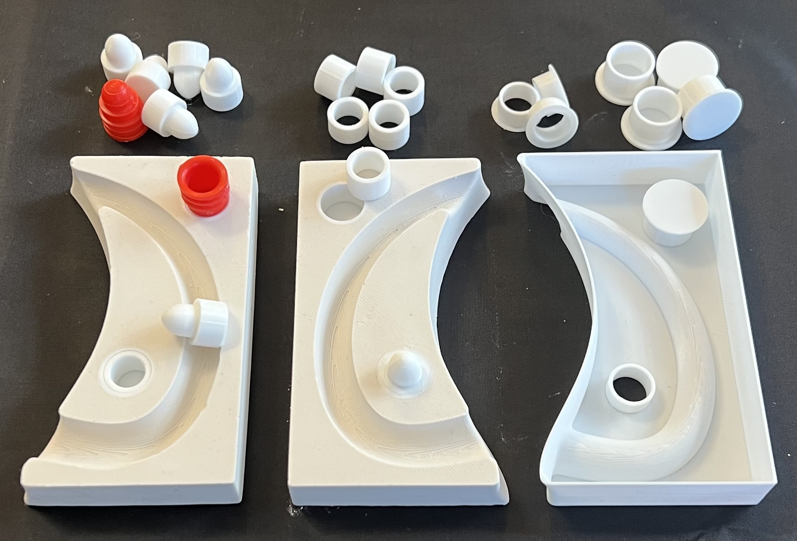
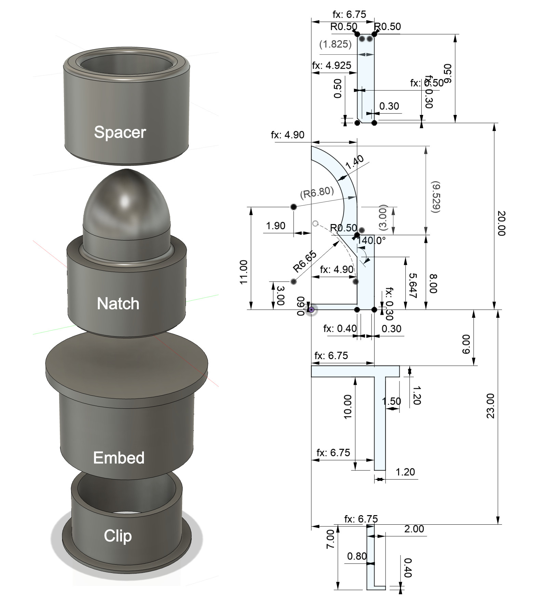
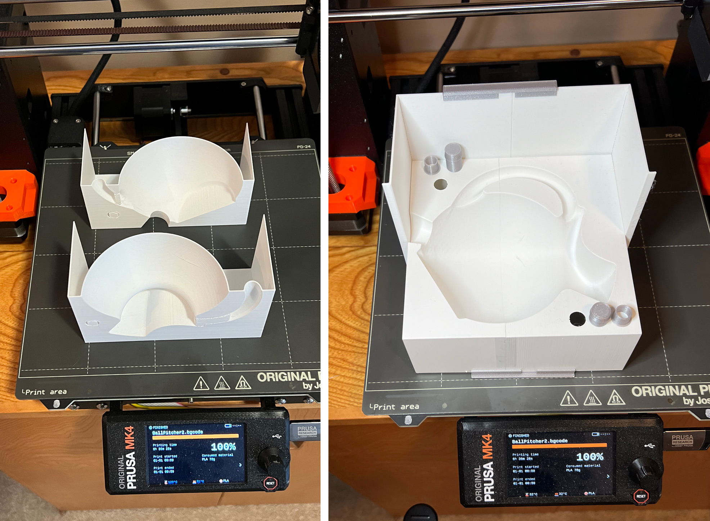
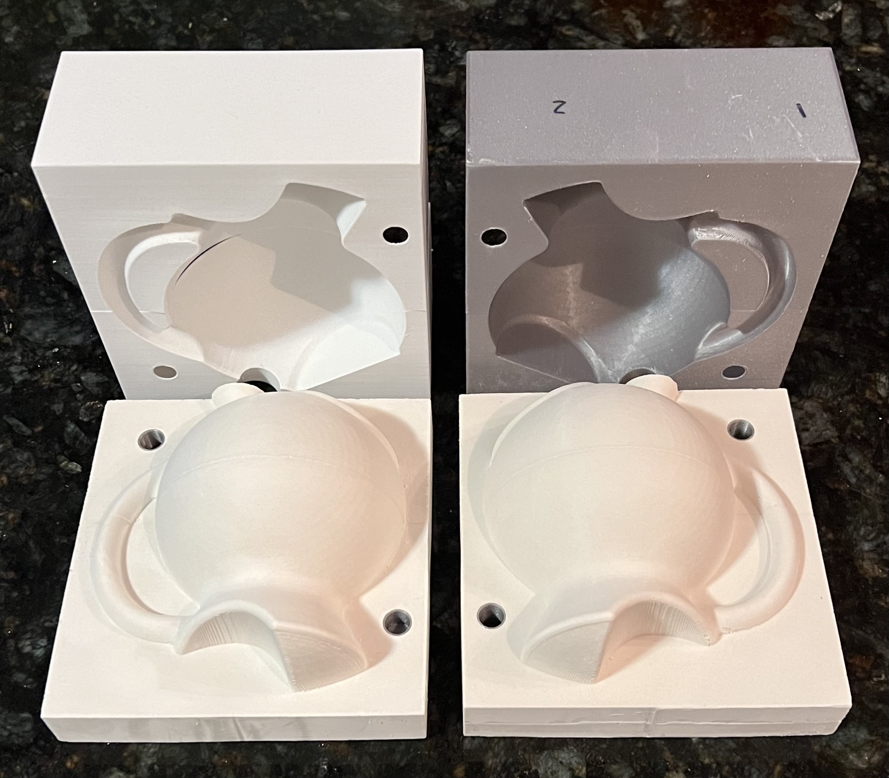

A cereal bowl jigger mold made using 3D printing
Beer Bottle Master Mold via 3D Printing
Better porosity for Brown Sugar Savers
Build a kiln monitoring device
Celebration Project
Coffee Mug Slip Casting Mold via 3D Printing
Comparing the Melt Fluidity of 16 Frits
Cookie Cutting clay with 3D printed cutters
Evaluating a clay's suitability for use in pottery
Make a mold for 4-gallon stackable calciners
Make Your Own Pyrometric Cones
Make your own sieve shaker to process ceramic slurries
Making a high quality ceramic tile
Making a Plaster Table
Making Bricks
Making our own kiln posts using a hand extruder
Medalta Ball Pitcher Slip Casting Mold via 3D Printing
Medalta Jug Master Mold Development
Mother Nature's Porcelain - Plainsman 3B
Mug Handle Casting
Nursery plant pot mold via 3D printing
Pie-Crust Mug-Making Method
Plainsman 3D, Mother Nature's Porcelain/Stoneware
Project to Document a Shimpo Jiggering Attachment
Roll, Cut, Pull, Attach Handle-making Method
Slurry Mixing and Dewatering Your Own Clay Body
Testing a New Load of EP Kaolin
Using milk as a glaze
Mold Natches
3D design and 3D printing are enabling a rethinking of mold natches. The precision of the process is such that now natches are not even needed in some multi-piece molds. When they are there is now so much flexibility regarding how they can be incorporated into working molds.
-Provisioning holes in the 3D-printed parts permits inserting 3D printed fittings for propagating natches, embeds and retainers into whatever is being cast.
-Provisioning cutouts permits rooting of platforms onto which
This method of printing in a hole also enables the use of commercial natches. By adjusting the size of my own the same block mold can be used to deploy either my own or the commercial natches.
Related Information
DIY natches, spacers and embeds in a plaster handle mold

This picture has its own page with more detail, click here to see it.
This is our third-generation alternative to the use of traditional mold natches (like the red ones in the photo). Here is what you are seeing:
Right: A 3D-printed case mold for a mug handle. Clips (retainers) have been inserted from the bottom side. An embed has been pushed down over the one in the rear.
Center: The plaster mold created from it. The embed at the rear is ready for inserting a spacer (the nipple of the other half will it into that). A natch has also been inserted into the embed in the front. These fit tight enough in the hole that glue was not needed here.
Left: Spacers have been inserted into both embeds. A standard natch fits into the one in the rear and one of our natches fits into the one in the front.
Soon the CAD drawing for these (natches, spacers, embeds, clips) will be available on digitalfire.com.
v1 DIY Four-Part Mold Natch System
Essential for 3D mold-making in ceramics
Available on the Downloads page

This picture has its own page with more detail, click here to see it.
Plastic natches are used in traditional mold making for slip-cast ceramics (instead of registration keys). They are cast into plaster molds to provide durable and good-fitting interlocks between pieces. They are self-interlocking, a popular size is the 3/8" or 9.5 mm (nipple diameter) natch. However, these have not proven suitable for the mold making process described on this site. The Digitalfire four-part system accommodates 3D printing (usually using PLA filament) case molds for pouring plaster, block molds for pouring rubber case molds and even hybrid solutions. Here are some features of our system:
-13.5mm holes in 3D printed case molds are all that is needed to adapt to these.
-3D printing case and block molds necessitate pouring plaster and rubber into shells with planar mating surfaces downward that must sit flat on the work table (traditional natches don’t work in this setting).
-Casting an embed into a mold enables gluing (or friction fitting) a natch or a spacer inside.
-The use of embeds permits flat mating surfaces, these can be sanded (for better flatness and fit). They also allow replacing natches if they get broken.
-A set of four interlocks (4 embeds, 4 clips, 2 spacers, 2 natches) weighs 8.7g.
Consider starting with a 0.1mm allowance (e.g. 4.8mm nipple inside a 4.9mm space). Print all four to check for fit. Then do cycles of adjusting the allowances and printing again until they fit.
Version 4 Ball Pitcher 3D printed block mold

This picture has its own page with more detail, click here to see it.
This project continues to demonstrate that multiple redesign, test cycles are a fact of life when making a new shape. 3D printing makes this so much easier. Here are the changes from v3:
-This time I am not going to back fill with plaster. I have heftier side rails that should hold things firmly in place.
-The rim is now cast in into final shape.
-The includes a distinct footring, this will enable easier cleanup of glaze on the foot and a cleaner edge line.
-The handle is thicker and looks a little further from the body (to enable getting my fingers in there).
-I am using natches this time, the two 9mm holes will mount embeds (the retainer and embed are shown beside the holes) - they will position flush in the case mold (I will propagate the embeds into the working mold also).
-I am casting it upside down, positioning the spout between the lower handle join and the foot ring. We will drain for ten seconds then plug the hole using a plaster insert made to fit snug. Remaining slip inside will refill the hole and even build the wall a little thicker there (increasing wall strength by the lower handle join).
Ball pitcher v.4 case molds cast

This picture has its own page with more detail, click here to see it.
We are just using pottery plaster for now. Notice the embeds for the natches. This time I did not backfill the 3D prints, that is better - because they are flexible they were much easier to remove from the set plaster. The side rails help keep them firmly in place and scotch tape on the backs was sufficient to keep them lined up at the join. These prints have a wall thickness of only 0.8mm. I did not need to use a parting agent nor did I do any smoothing on the 3D prints (although some cleanup on the plaster case mold will be done). Next step: A working mold, version 4.
 PayPal | No tracking, No ads, No paywall, No transient content! Just organized, concise information constantly updated and improved. Was this helpful? Consider supporting me. |
| By Tony Hansen Follow me on        |  |
Got a Question?
Buy me a coffee and we can talk 

https://digitalfire.com, All Rights Reserved
Privacy Policy